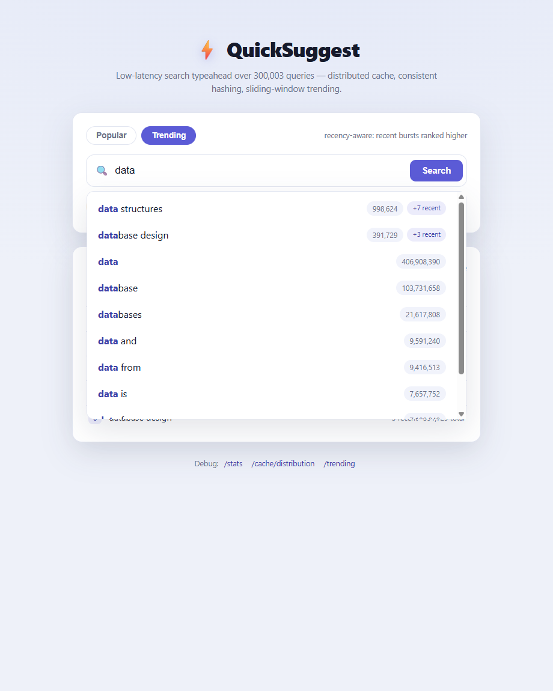

A low-latency search typeahead service: prefix suggestions ranked by popularity, a distributed cache addressed by consistent hashing, recency-aware trending, and batched write-behind persistence.
prefix suggestions consistent hashing distributed cache sliding-window trending write-behind batching
Two principles drive the design. (1) Reads stay in memory: a suggestion request touches only the cache and an in-memory prefix index — never SQLite — which is what makes p99 latency sub-millisecond. (2) Writes are decoupled from requests: a search updates in-memory state instantly (so suggestions stay fresh) and is persisted later in batches, so the database is never on the hot path.
GET /suggest normalises the prefix, asks the CachePool (which routes the
mode:prefix key through the consistent-hash ring to one logical node). On a hit it returns the
cached list (~0.1 ms); on a miss it ranks from the PrefixIndex (and the RecencyWindow
for trending mode), fills the cache, and returns. The SQLite store is never read on this path.
POST /search appends the query to the durability journal, increments the write-behind buffer,
and updates the in-memory index and recency window immediately (so suggestions are fresh), then returns
{"message":"Searched"}. A background timer (or a full buffer) flushes the buffer to SQLite as one
additive UPSERT transaction and invalidates the affected cached prefixes.
CREATE TABLE queries ( query TEXT PRIMARY KEY, count INTEGER NOT NULL DEFAULT 0, -- ranking weight: dataset count + accepted searches searches INTEGER NOT NULL DEFAULT 0, -- times submitted via /search updated_at INTEGER NOT NULL DEFAULT 0 ); CREATE INDEX idx_queries_count ON queries(count DESC);
QuickSuggest uses the open Norvig word-frequency n-gram lists (derived from the Google Web
Trillion Word Corpus), already in query<TAB>count form:
| File | Source URL | Rows | Example line |
|---|---|---|---|
count_1w.txt | https://norvig.com/ngrams/count_1w.txt | ~333k single words | the 23135851162 |
count_2w.txt | https://norvig.com/ngrams/count_2w.txt | ~286k two-word phrases | of the 2766332391 |
Combined that is 591,770 unique queries with real popularity counts — well above the 100k
minimum — and the bigrams supply realistic multi-word queries (data structures, how to,
new york). At boot the server loads the top 300,000 by count into the in-memory index.
npm install # dependencies (express, better-sqlite3) npm run fetch-data # download the two n-gram files (~10 MB) into data/ npm run load-data # parse + ingest into SQLite (a few seconds) npm start # http://localhost:3000 # offline alternative (no download): generate a synthetic dataset npm run load-data -- --synthetic 150000
Loader options: --reset (wipe first), --unigrams-only,
--limit N (keep top-N), --min-count N (drop rare terms),
--synthetic N.
| Endpoint | Purpose / behaviour |
|---|---|
GET /suggest?q=<prefix>&mode=popular|trending |
Up to 10 prefix-matching suggestions. popular (default) sorts by all-time count;
trending applies recency-aware ranking. Returns source = cache|index|empty,
the owning cache node, and server latencyMs. |
POST /search body { "query": "…" } |
Records the search (buffered for batched persistence) and returns { "message": "Searched" }.
Empty query → 400. |
GET /trending?n=10 |
Top queries in the current sliding window, with recent and total count. |
GET /cache/debug?prefix=<p>&mode= |
Routing for a key: cacheKey, keyHash, ownerNode,
ringSlotHash, and current status (hit/miss) + TTL remaining. |
GET /cache/distribution?samples=N |
Spread of N distinct keys across the cache nodes (consistent-hashing balance), with percent
per node and idealPercent. |
GET /stats |
Latency percentiles, cache hit rate, DB read/write counters, write-reduction factor, buffer depth, journal-recovered count. |
GET /health | Liveness, indexed-query count, pending writes. |
$ curl 'http://localhost:3000/suggest?q=java'
{ "prefix":"java", "mode":"popular", "source":"index", "node":"cache-1", "latencyMs":0.14,
"suggestions":[ {"query":"java","count":55360151}, {"query":"javascript","count":25766226}, … ] }
$ curl 'http://localhost:3000/suggest?q=data&mode=trending'
{ "prefix":"data", "mode":"trending", …, "suggestions":[
{"query":"data structures","count":998624,"recent":7,"score":28.81}, ← recency lifts it to #1
{"query":"data","count":406908390,"recent":0,"score":19.82}, … ] }
$ curl -X POST localhost:3000/search -H 'Content-Type: application/json' -d '{"query":"data structures"}'
{ "message":"Searched" }
$ curl 'http://localhost:3000/cache/debug?prefix=da'
{ "prefix":"da", "cacheKey":"popular:da", "keyHash":3932078230, "ownerNode":"cache-3",
"ringSlotHash":3935099281, "status":"miss", "ttlRemainingMs":null }
Why: the assignment needs durable, reliable counts and an easy local run — not horizontal
scale. SQLite is ACID, embedded (one file, zero ops), and with journal_mode=WAL handles the
write-batch + occasional-read pattern comfortably. Trade-off: a single embedded file does not
scale horizontally — but because reads are served from memory, the store is never the latency bottleneck, so a
client/server DB would add operational cost for no read benefit.
Why: every query starting with a prefix is a contiguous slice of a lexicographically sorted
array, found by binary search. Short, hot prefixes (≤ 3 chars) keep an incrementally-maintained top-K bucket so
we never rescan a huge slice. It is compact and cache-friendly, and counts update in O(log n).
Trade-off: inserting a brand-new query is an O(n) array splice — acceptable because
the vast majority of searches are repeats of queries already in the corpus; new queries could be staged and merged
if the write-mix changed.
Why: the spec explicitly allows "logical cache nodes". They exercise the exact same routing,
TTL, eviction and invalidation semantics consistent hashing requires, with nothing to install. Each node sits
behind a tiny get/set/delete interface. Trade-off: they live in the app process, so
they don't survive a restart and aren't shared across instances — but each node could be swapped for a Redis
process without changing anything above the cache layer.
hash % N)Why: hash % N re-homes almost every key when N changes — fatal for a
cache. Consistent hashing re-homes only the keys on the changed node's arcs; virtual nodes keep the arcs even.
MurmurHash3's strong avalanche is what keeps the near-identical vnode-position strings well spread (a weaker hash
such as FNV-1a clustered them and unbalanced the ring during development). Trade-off: 160 vnodes
× N nodes ring points cost a little memory and a one-time sort; negligible here.
Why: a window of time buckets makes the requirement "a short-lived spike must not be over-ranked forever" structural — the spike's contribution disappears the moment its buckets age past the window edge, with no per-read decay math and no cool-down parameter to tune. Trade-off: coarser time resolution within a bucket (10 s), and recency state is process-local (resets on restart).
Why: aggregating searches and flushing in batches turns one DB transaction per search into one
per flush; the journal records each search before buffering so a crash is recoverable. Trade-off:
the durable store lags by at most one flush window (≤ 2 s), and a crash can lose searches the OS had not yet flushed
to disk (bounded by the journal). For approximate popularity counts this freshness/throughput balance is the right
one; fsync-per-append would close the last gap at a throughput cost.
Why: short TTLs with ±15% jitter are the staleness safety net (and avoid synchronized expiry); additionally, every flush deletes the cached prefixes of the queries it just updated, so suggestions reflect new counts within one flush window rather than one full TTL. Trade-off: a little extra work per flush (bounded by prefix length), well worth the freshness.
Measured in-process with npm run benchmark (no HTTP overhead) on the 591,770-query
dataset (top 300,000 loaded). Reproduce with npm run benchmark -- --reads 20000 --writes 20000.
| p50 | p95 | p99 | max | mean | DB reads on read path |
|---|---|---|---|---|---|
| 0.002 ms | 0.080 ms | 0.261 ms | 4.6 ms | 0.017 ms | 0 |
Cache hit rate (steady state): ≈ 81%. Suggestions are served entirely from the in-memory prefix index and the cache; SQLite is never read on a suggestion request. Trending mode (uncached recency re-rank) p95 ≈ 0.4 ms.
| Naive (per-request) | Write-behind batching | |
|---|---|---|
| Row writes | 20,000 | 4,721 |
| Transactions | 20,000 | 5 |
Transaction reduction ≈ 4000× (one transaction per flush, the dominant win — far fewer fsyncs/round-trips, holds regardless of skew). Row-write reduction ≈ 4.2× (repeated queries collapse within a flush window; scales with traffic concentration). Failure trade-off: a crash loses at most one un-flushed window; the append-only journal replays un-flushed searches on restart, bounding loss to un-fsynced entries.
| cache-0 | cache-1 | cache-2 | cache-3 | ideal |
|---|---|---|---|---|
| 26.2% | 23.9% | 24.9% | 25.1% | 25.0% |
Elasticity: adding a 5th node re-homed only ≈ 21% of keys (ideal
1/5 = 20%) — versus ~75% for a plain hash % N scheme. That gap is the entire point of
consistent hashing. Prefix-index build time: ≈ 4.3 s for 300k queries (one-time, at boot).
25 unit tests (Node's built-in runner) pass, covering the hash ring (balance + re-map cost), prefix index
(matching, ordering, live updates, new queries), cache (TTL, LRU, routing, invalidation), recency window
(windowing + age-out), ranking (popular vs trending), and the batch writer (aggregation, flush triggers, and
journal crash-recovery). Run with npm test.

mode.